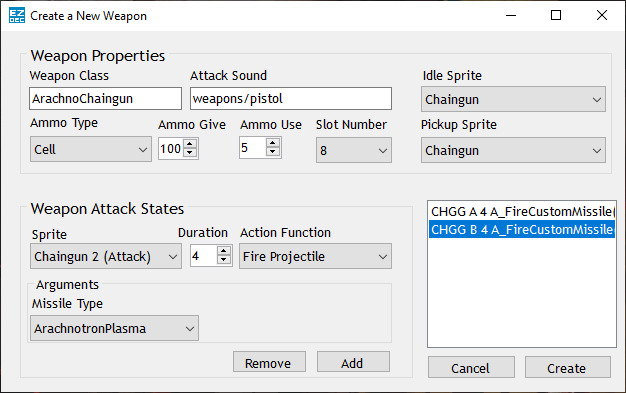

EZDec
About EZDec
EZDec is an application that makes Doom modding easy. It allows users to create new weapons for zdoom-based ports with an easy-to-use GUI. While it is not fully finished, I plan on adding more features to it at some point.
